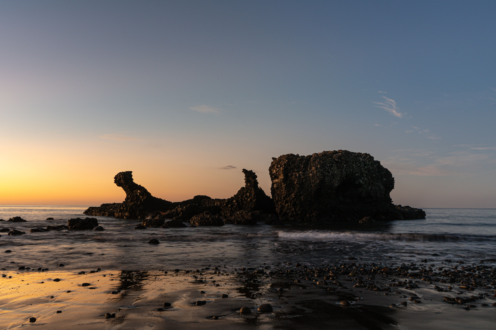

¿Qué es el Tunco?
El Tunco es uno de los destinos de playa más populares de El Salvador, ubicado en la costa de La Libertad. Es famoso por sus olas ideales para practicar surf, sus hermosos atardeceres, su ambiente relajado y su variedad de restaurantes, cafés y alojamientos. Es un lugar perfecto para disfrutar del mar, descansar, aventurarse y compartir momentos inolvidables, ya sea en familia, con amigos o en pareja.
¿Qué hacer en el Tunco?
- Disfrutar del atardecer: Visita la famosa roca de El Tunco y toma fotografías.
- Caminar por la playa: Explora la costa, disfruta de la brisa marina y contempla el paisaje.
- Visitar restaurantes y cafés: Prueba mariscos, pupusas, comida internacional y café salvadoreño.
- Vida nocturna: Disfruta de música, bares y el ambiente de la zona.